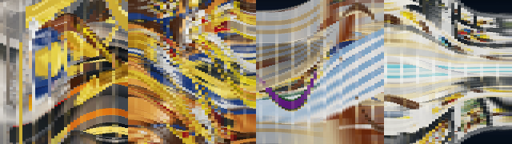
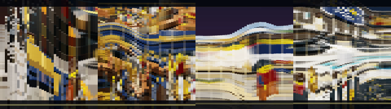
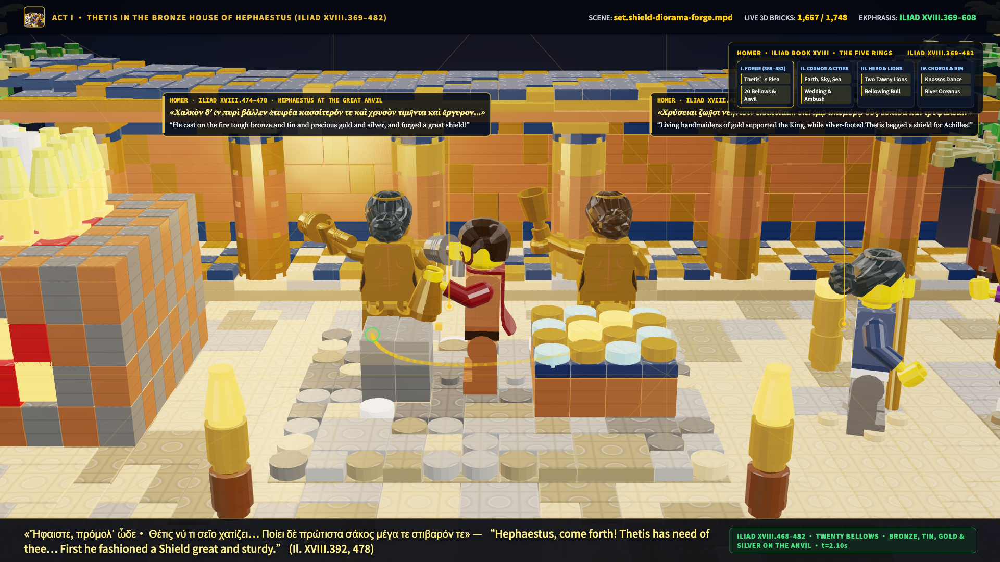
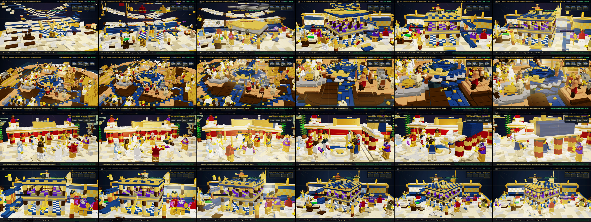

When every 2D frame (u, v) ∈ [0, 1]² of our nine 3D WebGL LDraw LEGO films is stacked along the time axis τ ∈ [0, T], each film becomes a solid 3D Spatiotemporal Volume V(u, v, τ). Inside that prism, tracked LEGO characters, golden gods, rotating turntables, and terracotta townhouses extrude into 3D Spatiotemporal Worms (Action Tubes / Worldlines) threading through the structural planes of the Rule of Thirds, Golden Spiral, and Charles Bouleau’s 14-Line Harmonic Armature. Below, explore all 9 films and all 37 parts/shots across all four spatiotemporal visualizations—plus Film 09, our behind-the-scenes 3D LEGO Multiplane Forge & Agent Office (set.shield-diorama-office.mpd, 3,290 bricks).


Circumference = Timeline τ ∈ [0, T] · Radial Spokes = Cut Fractures τ_cut · 5 Inner Rings = Shot K-Means LDraw Palette · Outer Gold Spikes = Frame-to-Frame Motion & Earshot Jerk Peaks ‖c‴(τ)‖.
| Part / Shot | Time τ | 3D LDraw Model (Pieces) | 3D Spatiotemporal Worm Topology | Director's Grammar & Parallax | Pan θ / Δr | Arnheim Grid Resonance | Itten ΔL* / ΔH | 5-Swatch Palette |
|---|
| Film | Skill / Architecture | Dur / FPS | Mean ΔL* (Chiaroscuro) | Mean ΔH (Cold–Warm) | Accent Area A_worm/A | Mean d_grid (Bouleau 14-Line) | Compositional Lock % | Mean Curvature κ(τ) | Bruce Block Intensity | Action |
|---|
Inspired by Walt Disney’s 1937 Multiplane Camera and John Sorrentino’s Kohnny (“I Turned Claude Code Into a Video Game”)—alongside its ten open-source equivalents (AgentSystemLabs/agent-office, bill10/agent-007, W17ant/Claude-Office, KalebKE/PixelOffice, pixel-agents-hq/pixel-agents, khanh020905/my-office, proactive-agent/workbench, langwatch/kanban-code, BloopAI/vibe-kanban, and NikiforovAll/claude-code-kanban)—we engineered a physical 48×32 3D LEGO studio (set.shield-diorama-office.mpd, 3,290 pieces) and filmed Film 09 inside it.


Every Shield section (shield-m0 through shield-m9) and standalone 48×32 diorama was built as an isolated module on a 2-layer cross-bonded baseplate, verified by the independent Auditor (clicks.py & qa_video.py), and merged single-file into shield_frame.py.
| Repository | Category | How It Maps to Our 3D LEGO Multiplane Studio (set.shield-diorama-office.mpd) |
|---|---|---|
| AgentSystemLabs/agent-office | 3D Office + Worktrees | 4-level 3D LEGO studio floor with 4 specialist agent desks, Kanban corkboard & MCP orchestration |
| bill10/agent-007 | Kanban Worktrees + Maestro | Maestro (Hephaestus) & Auditor (Athena) on the elevated gallery overseeing per-card worktrees |
| W17ant/Claude-Office | Isometric Office + Task Board | Live 4-column brick-built Kanban board with specialist routing (Builder, Reviewer, Sound Designer) |
| KalebKE/PixelOffice | Event-Driven Office + Lounge | Agents walk to the Kanban wall in plan mode, code at desks, and chat at the Espresso/Ambrosia Bar |
| pixel-agents-hq/pixel-agents | Canvas 2D State Machines | Non-invasive transcript & timeline state tracking rendered in our live HUD overlay |
| khanh020905/my-office | 3D Session Characters | Each of the 8 video-skill sessions spawns a distinct LDraw minifigure character at its station |
| proactive-agent/workbench | Worktrees + Semantic Merge | Conflict-free assembly of M0..M9 into shield_frame.py with zero stud clashes |
| langwatch/kanban-code | Kanban + tmux + PRs | Links each diorama build script, checker output, and contact-sheet review card |
| BloopAI/vibe-kanban | Multi-Agent Kanban + Previews | Supports all 8 video skills with live 3D WebGL dev-server previews per card |
| NikiforovAll/claude-code-kanban | Local Kanban + Context Meter | Tracks 55-minute prompt-cache auto-compact countdown & piece-budget telemetry |